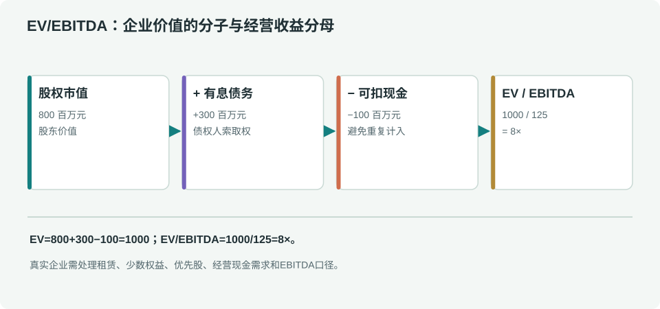
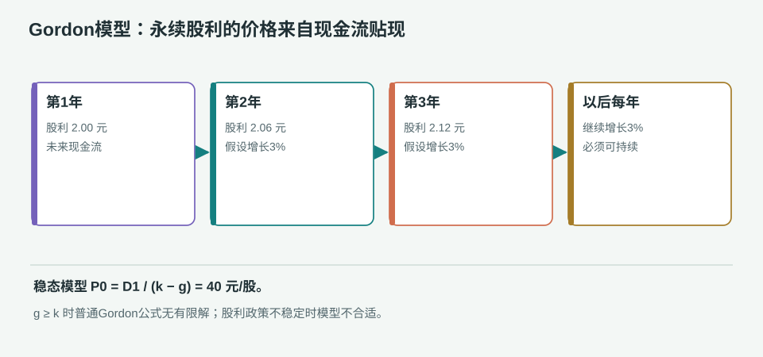
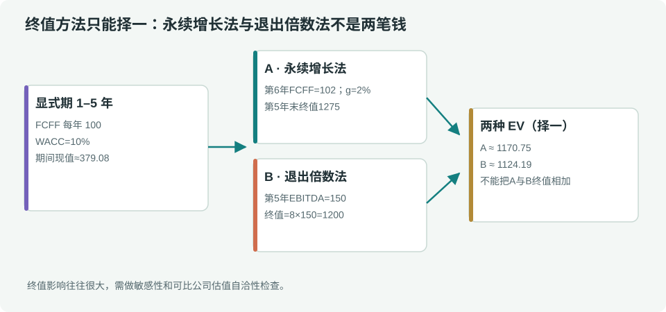

CHAPTER 10 · ENTERPRISE AND EQUITY VALUATION
PS、EV/EBITDA、DDM与退出倍数
绝对不能把股权价值和企业价值、营业额和现金流混在一起。每个倍数都有恰当的分子、分母、期限与使用边界。
估值分子是股权还是企业？不能靠倍数名字猜
两家公司营业收入都为100百万元，某一年都亏损，因此传统PE无法提供常规的正利润倍数。然而，投资者仍可比较销售额、毛利率、经营现金流、企业价值和长期分红能力。关键不是找“适用于所有亏损企业的万能倍数”，而是保证分子代表的索取权与分母描述的现金流或经营规模匹配。
PS是股权价格对收入的比较；EV/EBITDA是企业整体资本价格与息税折旧摊销前利润的比较；股利折现DDM使用股东获得的现金流与股权资本成本；退出倍数法则将未来某个时点的市场定价假设换算为终值。四种方法的差异从现金流和资本结构开始，而不是从计算器界面开始。
PS：为什么低利润率企业不应仅靠销售额得到高估值
市销率PS=普通股市值/同口径营业收入。在当前净利润为正且与市场价值时间窗口相匹配的条件下，PS=PE×净利润率。这一代数关系有重要启发：即使营收很大，如果只能留下很少的净利润，较高PS可能暗含极高的长期盈利预期。

亏损公司没有稳定的正PE，所以不能将当前负利润机械代入这条关系后断言“PE为负所以很便宜”。研究者必须先解释毛利率、客户留存、固定费用、获客成本与再投资需求怎样使未来现金流转正。收入确认质量、合同资产、应收款和一次性收入尤其重要。
EV/EBITDA：企业价值与营业利润口径必须一致
企业价值EV是对企业经营资产、在股权和债权等资本提供者之间可分配的总价值的一种近似。常见桥接思路是普通股市值 + 有息债务 + 优先权益及少数权益 − 可用非经营现金，实际需要分析租赁负债、非经营资产、或有索取权与交叉持股等。它不能无条件简化为“市值 + 全部负债 − 账面现金”。

假设股权市值800、债务300、可用现金100、优先和少数权益均为0，EV=1000百万元。若EBITDA=125百万元，则EV/EBITDA=8倍。但EBITDA不等于现金流：企业仍要支付税、利息、必要资本开支和营运资本投入。两家EV/EBITDA都为8倍，实际自由现金流回报率可能截然不同。
EV/EBITDA为什么不能消除资本结构与会计差异
EV/EBITDA相比PE在某些行业能减少融资成本与折旧摊销会计差异对比较的干扰，但它并不完全“与资本结构无关”：债务可能影响风险、融资条件、税盾和估值，企业价值的口径也可能受到租赁与少数权益调整。EBITDA高的重资产企业可能持续支付高额维护性资本开支，真实FCFF明显低于EBITDA。
| 行业或情景 | 可参考的倍数 | 必须增加的分析 |
|---|---|---|
| 非金融制造企业 | EV/EBITDA、EV/EBIT、FCFF | 固定资产重置与维护资本开支 |
| 轻资产高增长企业 | PS、毛利、FCFE/FCFF | 客户留存、未来费用、股权稀释 |
| 银行与保险 | PB、ROE、股权收益法 | 金融负债为经营组成、监管资本 |
| 资源周期企业 | 跨周期正常化盈利或现金流 | 商品价格与维持性资本开支 |
建立同行业倍数集合时，需要检查财务报告日期、会计准则、合并边界、租赁政策和非经常性收益。如果分母来自过去一年，却用未来两年的市场预期故事解释分子，倍数比较也可能失真。
DDM：股利是股东现金流，但不是所有公司都能稳定分配
股利折现模型从普通股股东未来实际获得的股利出发，适合讨论有较稳定、可持续股利政策的公司。若预计下一年每股股利D1为2元，要求回报率Ke为8%，且股利能够永久以3%增长，则稳定增长Gordon模型给出40元/股。

未分红的成长企业不一定毫无价值：现金可能用于有正净现值的投资。反过来持续高分红也不保证价值：若分红依赖举债、出售资产或牺牲必要资本开支，其长期可持续性需要怀疑。对于回购主导的公司，应注意股利和股东整体现金分配不完全相同。
退出倍数法：只是换一种方式写下终值假设
多阶段DCF经常在第五年等预测末期估一个终值。除了永续增长公式，也能假设第五年末企业按某一EV/EBITDA倍数进行交易：TV5 = EBITDA5 × 退出倍数。例如第五年EBITDA=150百万元、退出倍数8倍，TV5=1200百万元。如果以10% WACC折现五年，其现值约745.11百万元。

退出倍数需要回答：可比企业是否真的可比？第五年处于行业周期何处？未来资产和债务结构是否变化？是否把当前高估值倍数不加论证地延续到未来？这是一项市场定价假设，不是“假设五年后必定能按8倍卖出”的承诺。
工具箱而非排名表：怎样交叉验证不同估值
同一家公司，用不同方法得到不同结果并不意味着必须取算术平均。首先应检查估值对象：PS和PE的分子属于普通股市值，EV/EBITDA的分子属于企业价值，DDM给出普通股权价值。其次要检查时点与单位：TTM或预测期的销售额、盈利、股利和EBITDA不能混用。
| 工具 | 优先关注什么 | 典型失败模式 |
|---|---|---|
| PS | 收入质量、未来利润率 | 亏损永续化、收入虚增、稀释 |
| EV/EBITDA | 经营现金流、CapEx、负债 | 把EBITDA当自由现金流 |
| DDM | 稳定股利与股权成本 | g接近或超过Ke |
| 退出倍数 | 未来可比公司与周期位置 | 未来高倍数无依据、贴现漏算 |
对有资本开支的企业，最好同时跑FCFF模型；对重视股东回报的成熟企业可检查股利模型；对可比公司较多的非金融企业可比较EV/EBITDA。若各法之间偏离巨大，优先解释它们在盈利持久性、再投资、杠杆与终值方面的假设分歧，而非选择最乐观的一个。
一套可复算的估值审核练习
四个必答问题
- 给定股权市值800、债务300、非经营现金100、EBITDA125（百万元），先算EV=1000，再算EV/EBITDA=8×。为什么不能用800/125冒充EV倍数？
- 假设PS=4×且净利率只有2%，为什么隐含PE高达200×？该企业若当前亏损，这条等式还可以怎样用？
- D1=2、Ke=8%、g=3%，DDM给出40元。若g升至9%，为什么不能继续机械使用普通Gordon公式？
- 第五年退出倍数如果从8×改为6×，终值会减少多少？是否应该直接把差额当成股价变化？
任何倍数都需要链接到经营过程、现金流与资本成本。能够解释“不应该使用这个倍数”的时刻，比熟练计算一个倍数更重要。
原始资料与适用范围
模型与理论口径参考CFA Institute和NYU Stern公开资源；市场倍数反映特定时点与样本，不存在跨行业通用的合理倍数。所有计算示例均为人工构造。